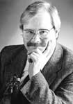

|  |
Naumburg-Award-winning violinist Andrew Jennings has achieved international acclaim as both a performer and a teacher. As a soloist and chamber musician he has appeared in virtually every state and province in the US and Canada as well as most of the major cities of Europe. He can be heard on recordings for RCA, Nonesuch, Vox, Turnabout, CRI, Danacord, Crystal and MMO and these recordings have twice received Grammy recognition. Television appearances both here and abroad have also received numerous awards including an Emmy. His chamber music career has included a sixteen-year tenure with the acclaimed Concord String Quartet as well as the Gabrielli Trio and his current membership in the Concord Trio. As a leading exponent of new music he has given nearly three-hundred premiere performances as well as acclaimed surveys of the complete chamber and duo works of Bach, Beethoven, Schubert, Ives, Brahms, Rochberg, Bartok and others. His primary teachers were Pamela Gearhart, Alexander Schneider and Ivan Galamian and his chamber music studies were with the Juilliard and Budapest String Quartets.
Mr. Jennings’ teaching credentials include long-term appointments as artist-in-residence at Dartmouth College and the University of Akron. His students have won important international competitions and hold positions in orchestras, string quartets and universities throughout the country. He currently holds simultaneous appointments as Professor of violin and chamber music at both the University of Michigan in Ann Arbor and the Oberlin College Conservatory. He has been a member of the artist faculty of the Tanglewood Music Center for the past twelve years. |